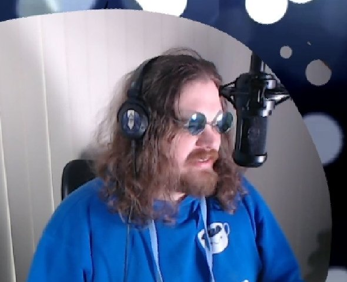
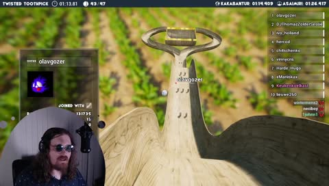
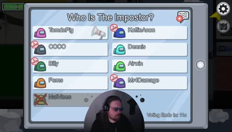
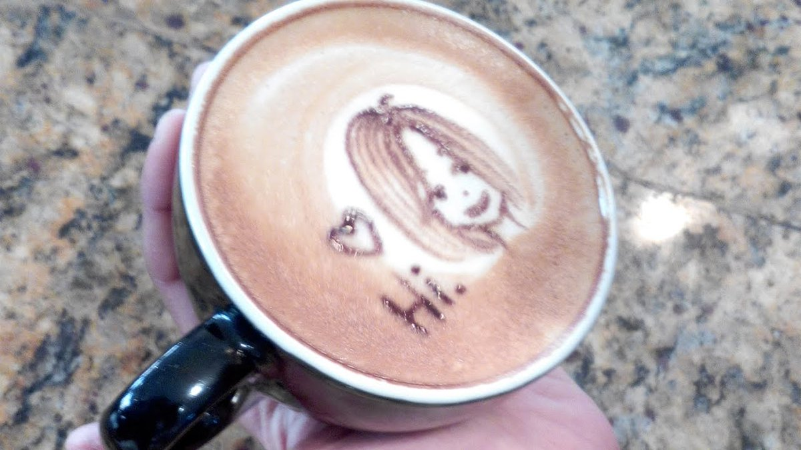

Het Koffiehuis




Wesley, beter bekend onder het pseudoniem "KoffieAnon" is een nederlandse streamer die sinds october 2017 actief is. KoffieAnon is in 1985 geboren in Amsterdam en woont op dit moment in Zaandam. KoffieAnon speelt vooral indiegames (games van kleine/onafhankelijke gamestudio's) maar ook games zoals "Crusader Kings III" en "marbles on stream". verder heeft KoffieAnon geen vast schema, maar meestal streamt hij in de avond. zet notificaties aan om een berichtje te krijgen wanneer KoffieAnon live is!
de KoffieStream
het kan zijn dat de stream niet werkt. doet hij het niet? dan wordt er aan gewerkt.